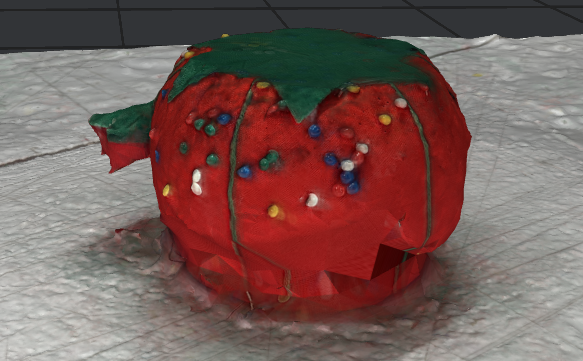
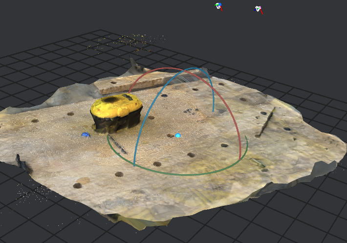

Welcome to my PS70 portfolio! I hope you enjoy learning more about my project for PS70: Intro to Digital Fabrication.
05 : 3D Design & Printing
This week, I experimented a bit more with 3D printing, and I also did some more research about my final project's design. Click any of the links below to learn more:
3D Printing Extravaganza
Buoyed by last week's 3D printing experiences, I decided to try out a more ambitious 3D printing project. Some of my favorite 3D-printed objects have been dynamic in some way, so I eventually decided I was curious about how to make a collapsable cup, like this:
To differentiate it from the existing model, I decided that I wanted to make a collabsible wine glass (non-functioning---this bad boy won't be water-tight!). However, this causes some problems; where the cup above is able to have a really simple design because expanding it naturally pushes the layers together, the same won't be true for the wine glass.
After talking to Cassia, we eventually decided that, if there was just enough wiggle-room, a mechanism like the following might work:
To get it started, I decided to try to just print out a single layer to make sure that it should work. I came up with this model:
The first try ended up failing:
And the second one ended up being so tight that I couldn't move it:
So I scaled up the model and made the distance between the walls/teeth and the other wall smaller. This box closed, but it was now too loose to work well:
By this point, the week was nearly up, most of the printers were broken, and I wasn't sure how to quickly improve my model. I decided to cut my losses for the week and come back later.
More 3D Printing
I eventually came back a few weeks later in hopes of getting anything functional printed. I wanted something dynamic, but I no longer trusted my ability to get a working result, so I ended up finding this model online for a Collapsible Cup holder. The first print failed because the printer feeder got caught on one of the sides of the printer, but the second turned out wonderfully!
3D Scanning in Meshroom
For the protogrammetry portion of the assignment, I wanted to experiment with an app that used normal photos, rather than a depth camera. I settled on Meshroom, an open-source 3D reconstruction software that uses a relatively complex computer vision pipeline.
I tried it out with a few objects. It was frustrating because almost all of the images would be non-functional because meshroom said it couldn't gather my location data. I looked into this, and it might have something to do with the fact that the system uses accelerometer data recorded by the iPhone, but somehow uploading to my drive and changing file formats corrupted the data. In any case, I was still able to get some relatively successful scans:
Here's the original object:

And here's the scan:

The meshes ended up being enormous, so I also had to try to reduce the size of the scan, but this didn't really work. Overall, I wasn't able to get it into a low-enough resolution to display it online.
Still, I got some scans of other objects, with mixed results:

All of the examples captured way too much of the table---I couldn't figure out how to avoid this. In any case, I learned that Meshroom is a relatively painful app to use, but it seems to be good at reconstructing large-scale scenes. Just don't use it if you care about a 360-degree view of a small object.
Project Update
I spent a lot of this week trying to figure out how to make a theremin doable from scratch. This was non-obvious, and I still don't really understand how it works, but I put out some feelers to get a sense of what else I might need once I do understand it.
Here's the current plan:
I found an online tutorial for building a theremin Here which includes a complete bill of materials. It has basically everything I need, with the exception of an LED component and a way to transmit the audio information to my arduino. Minimally, then, I need to figure out how to add the following functionality:
- A way to read the theremin signal to arduino.
- Code that processes the signal and sends it to a light, mapping RGB.
- Some sort of visual component on the computer that I can interface with the arduino and update in real time.
We still haven't done too much with electronics yet, so hopefully next week a lot of things become more clear. I'm excited to do more!
—Thomas